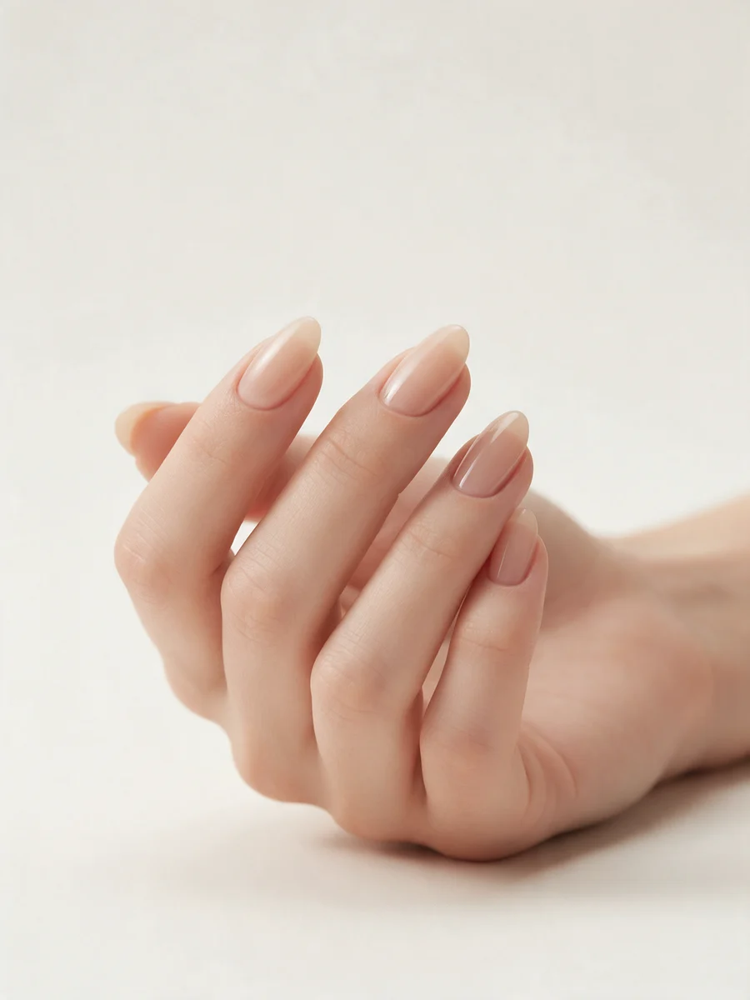
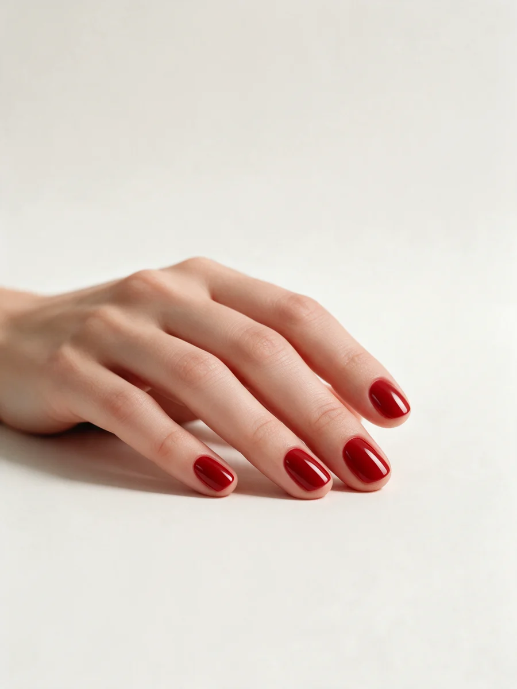
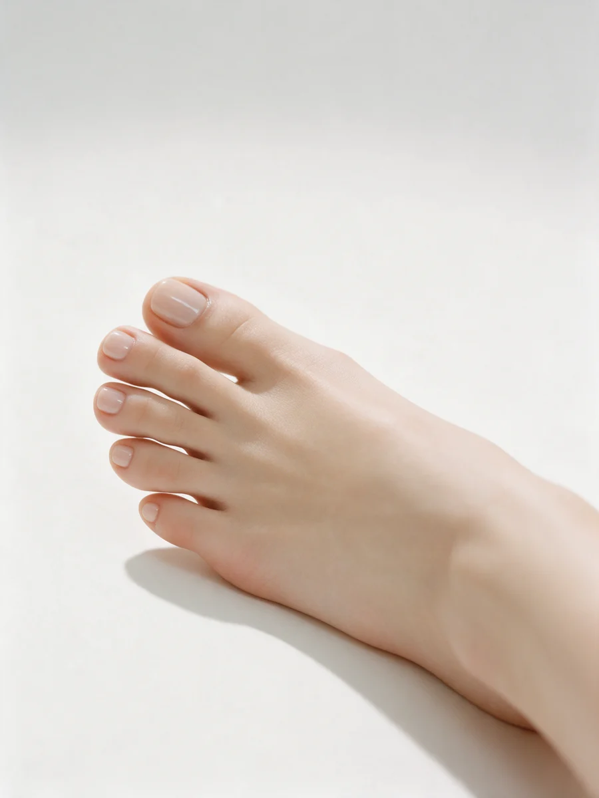
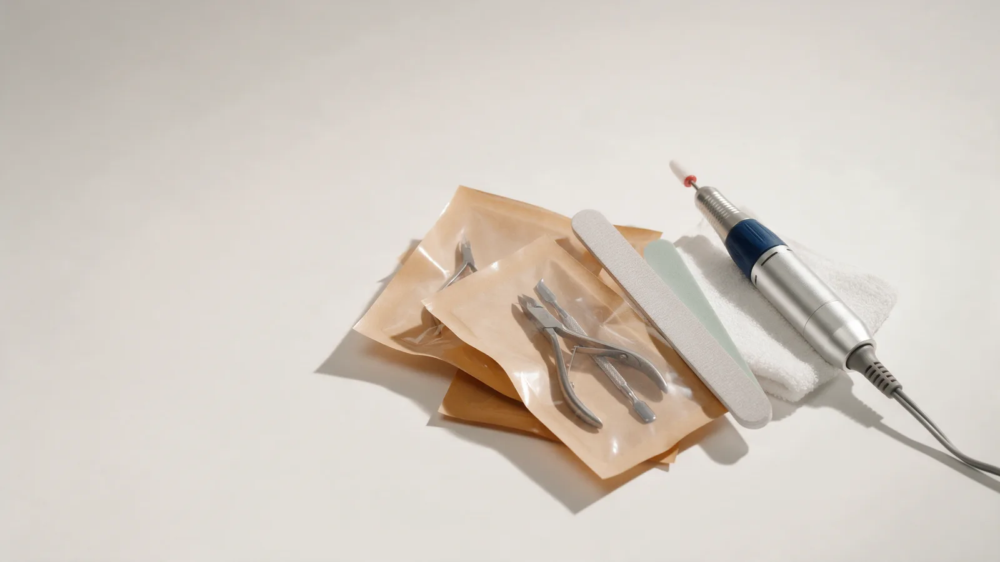

Студия маникюра · Краснодар
Маникюр и педикюр в Краснодаре – цены уточняйте при записи
Напишите в мессенджер – подскажем свободное время и подберём услугу.

- Рейтинг 4,8 по 31 оценкам
- 25 отзывов в Яндекс Картах
Цены
Цены уточняйте при записи в мессенджере.
Услуги
- Маникюр без покрытияуточнить
- Маникюр с покрытиемуточнить
- Педикюруточнить
- Наращиваниеуточнить
- Дизайнуточнить
Как записаться
- 01
Пишете в мессенджер
Напишите, какая услуга нужна.
- 02
Называем цену и время
Подскажем цену и свободное окно.
- 03
Приходите в студию
Адрес и часы – в контактах ниже.



Что говорят клиенты
Контакты
- Адрес
- проезд Репина, 34, Краснодар
- Часы
- уточняйте в мессенджере
- Телефон
- +7 (929) 831-90-07